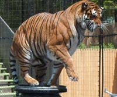

Animal Facts
Long Island Game Farm Featured Animals
African LionsAlligators
Aoudads
Buffalo
Camels
Fallow Deer
Giraffe
Kinkajous
Llamas
Monkeys
Peacocks
Ring-Tailed Lemurs
Tigers
Zebras
Other Game Farm Animals
Barbados Sheep
Chickens
Donkeys
Ducks
Ostrich
Pigs
Rabbit
Turkeys
Goats
African Lions

This year the Long Island Game Farm is proud to present "The Big Cat Encounter". The show runs twice daily weekdays, and three times daily during weekends. The "Big Cat Encounter" features the world famous Rosaires and their family with their rescued lions and tigers.
Native to the Sub-Sahara African Grasslands, the roar of an African Lion can be heard up to five miles away. Not only does it protect against intruders but it also is an efficient way of gathering all of the family members. Lions travel in what is called a "pride"; this group can include up to 50 family members. Adult lions can grow up to 500 pounds and 8 feet in length. Once they reach sexual maturity at the age of 4, the lionesses enter the breeding season together so that they can give birth at the same time and share nursing duties with each other. African Lions reside at the top of the food chain in their habitat and are carnivorous. Of all the hunting events which take place, only about one fourth are successful efforts. When feeding time arrives the male lions eat first, then the lionesses, and finally their cubs are able to feast on the leftovers. Once they have survived as cubs, African Lions can live over 15 years.
Alligators
The once endangered alligator dates back over 65 million years. The only two places in the world where this reptile exists are the southeast United States and China. In the 1960s the American Alligator, which usually lives up to 50 years in the wild, was on the brink of extinction because of poachers who killed them in return for high prices from those who wanted to make goods out of their valuable skin. Federal regulations were enforced in 1970 and the alligator population quickly rose to make the conservation effort the most successful in history. Alligators are quick, agile, and because of their quick bursts of speed, can outrun a horse for a distance of 30 feet. Dubbed "El Legarto"(which means Big Lizard) by European Settlers, these carnivores are known for their short, blunt snout, which is part of a very powerful jaw. Their teeth are conically shaped, made particularly for grabbing and holding as opposed to cutting, which explains why they swallow all of their food (which include fish, turtles, small mammals, and even smaller alligators) whole. The reproduction process starts when an alligator reaches the length of 6 feet. Once the females have mated, they move to a marshy area to build a nest to lay and guard their eggs, which number on average about 45. The incubation period lasts 65 days and once all of the babies are hatched, they must begin to live in the wild. The first couple of years before an alligator reaches 4 feet are the most dangerous because they are prey to many other animals; after that period, it becomes a predator reaching lengths of up to 14 feet long and weights up to 1,000 pounds.
Aoudads
The Aoudad, also known as the Barbary Sheep, is a goat-antelope found in the rocky mountains of North Africa. Aoudads stand 30 to 40 inches at the shoulder and weigh from 90 to 310 pounds. Aoudads are sandy brown with a slightly lighter underbelly. Shaggy hair coats the throat, which extends down to the chest in males. They also have a sparse mane. Aoudad horns have a triangular cross-section. The horns curve outwards, backwards and then inwards. Horns reach up to 20 inches.
Aoudads are found in arid mountainous areas. They are herbivores and remain solitary, for the most part. They eat grass, bushes, lichen and acacia. They are crepuscular, meaning that they are active in the early morning and late afternoon, but resting in the heat of the day. They are very agile and can jump over eight feet from a standing stop.
Buffalo
Buffalo were originally found on the American prairie. At present, however, their range is very restricted. The Buffalo is found in national parks of the United States and Canada. Earlier, when the population of this animal was larger, the herds traveled long distances in search of food. Today, one can see paths left by millions of Buffalo Bison hooves. The buffalo has a large head and neck and humped shoulders. Also known as the "American bison", the buffalo is brownish-black, except on the hind part of the body, which is brown. Long, coarse hair covers the head, neck, and hump. The hair forms a beard on the throat and chin. The head has a pair of horns like those of domestic cattle. Some pairs of horns spread 35 inches at their widest point. A full-grown bull (male) measures up to 12 1/2 feet long, from the tip of its nose to the end of its short, tufted tail. Its height at the shoulders measures 6 feet. Bulls usually weigh between 1,600 and 2,000 pounds. Buffalo are grazing animals; their feeding behavior is similar to that of domestic stock. They feed on grasses and other ground forage. When buffalo (bison) were abundant, they influenced the ecosystem greatly. Their wallows served as temporary water resources for other animals. Through dung production they also contributed to creating the rich soils of the prairies. Buffalo live in small groups arranged by sex, age, and habitat. Cow groups consist of females, calves, and a few males. There is a tendency to develop dominance in groups. Males that are older and have a higher rank and breed more often than the other group members. Buffalo groups may be seen during grazing and traveling. They travel in a line. These animals make good swimmers and runners. Buffalo are capable of reaching speeds of about 62 km per hour.
Camels
Domesticated thousands of years ago by perfume traders, the camel went on to become the desert dweller's primary source of transport, shade, milk, meat, wool and hides. They are still used in many parts of Africa and Asia today to pull ploughs, turn waterwheels, and transport people and goods to market along desert routes unreachable by motor vehicles. A fully-grown camel can weigh over 1500lbs. and reach a height of 6 feet. Camels have the reputation of being bad-tempered, moody creatures who spit and kick. In reality, they tend to be good-tempered, patient and intelligent. The ears of the camel are lined with fur to keep out dust and desert wind. Their thick eyebrows and long, curly, eyelashes also serve this purpose. These mammals need very little water if their regular diet contains good, moisture-rich pasture. Although camels can withstand severe dehydration, a large animal can drink as much as 21 gallons in ten minutes, an amount that would kill any other mammal. But the camel's unique metabolism enables the animal to store the water in its bloodstream. Contrary to popular belief, a camel does not store water in its hump. It is in fact a mound of fatty tissue from which the animal draws energy when food is hard to find. The normal life span of a camel is 40 years, although a working camel retires from active duty at 25.
Fallow Deer
The Fallow Deer is a ruminant mammal belonging to the family Cervidae. It has a brown coat with white mottles that are most pronounced in the summertime. Variants that are completely white or completely black have been known, but are very rare in the wild.
The Fallow Deer is over 4 feet long, with a 7-inch tail. It can weigh up to 220 pounds. Its antlers are broad and shovel-like. Its habitat is mixed woodland and open grassland. The males stay on their own and only join the females when in rut at the end of October.
The fallow deer was spread across central Europe and Britain by the Romans. The Normans kept them for hunting in the royal forests. Since the 18th century, they were released into the wild for hunting purposes. The fallow deer is easily tamed and is often kept semi-domesticated in parks today, like those at the Long Island Game Farm.
Giraffe
This year, the Game Farm will be celebrating the 9th birthday of Gerry, our beloved "gentle giant."
Giraffes are the tallest living land mammals in the world since the dinosaurs. During their 25 year lifespan, they will on average weigh one ton and grow to be 19 feet tall. Their natural habitats are the woodlands south of the Sahara Desert and the African Savannah. Very rarely will giraffes ever lie down; they even sleep and give birth while standing up. Since they can survive on the water naturally stored in plants, their strictly vegetarian diet allows them to go without water for several weeks. The female usually endures a fifteen month pregnancy around the age of eight. Her kin will grow for up to four feet in the first year of life. Because of their incredible height giraffes may sometimes find it hard to stretch their long necks far enough to reach things close to the ground such as food and water. Their tongues which can be up to 21 inches long come in handy for this purpose. Like fingerprints, no two giraffes have the same spot pattern on their bodies. Scientists originally concluded that giraffes do not make sounds to communicate with each other. Despite these observations, new research has shown that giraffes certainly do make sounds, but they are not able to be heard by the human ear.
Kinkajous

The Kinkajou, also known as the Honey Bear, is a nocturnal rainforest mammal related to the raccoons. It is the only member of the genus Potos. An adult Kinkajou usually weighs only five to six pounds.
Though classified as a carnivore and equipped with sharp teeth, Kinkajous prefer to eat fruit and honey. Living in South American trees, they are not a particularly rare animal but they are not often seen by people. Like raccoons, kinkajous have remarkable ability for manipulating objects, rivaling that of primates.
Llamas
Llama is a term used by the Peruvians to designate one of a small group of closely allied animals, which were the only domesticated hooved animals in the country prior to the Spanish conquest of the Americas. They were kept not only for their value as beasts of burden, but also for their flesh, hides, and wool. In fact, llamas were used in place of the horse, the ox, the goat, and the sheep. Llamas are now seeing increasing use in North America as clothing-fiber producing animals and as guard animals for sheep herds, which they protect from coyote attacks.
The skull generally resembles that of a camel, with relatively larger brain-cavity and orbits and less developed cranial ridges. The ears are rather long and pointed. There is no dorsal hump. Feet are narrow, the toes being more separated than in the camels, each having a distinct plantar pad. The tail is short, and fur is long and woolly.
Many llamas are easily annoyed. If annoyed they make a clucking noise as they are spitting up stomach acid. The disagreeable habit of spitting in the face of persons whose presence annoys them is common to all llamas.
Monkeys
The Long Island Game Farm is home to a variety of monkey species, all of which can be classified as new world monkeys.
New World monkeys are native to tropical forest environments of Southern Mexico, Central, and South America. This group includes the Squirrel, Spider, Vervet, and Capuchin, all of which can be found at the Game Farm. Some of them are as large as medium-sized dogs, but most are smaller. They range in weight from 1.5 to 33 pounds. Social group size vary from that of the Squirrel monkey, which lives in troops of up to 500 individuals, to that of the night monkey, which lives in small family groups. Monkeys are very enterprising when it comes to obtaining food. For instance, Capuchin monkeys venture out of the trees to hunt crabs, clams, and other small animals in mangrove swamps. They also hunt large insects and collect birds' eggs in the trees in addition to eating leaves and fruit. Capuchins can be easily trained and have recently served as aids for quadriplegics. Female Vervet monkeys have a more active leading role than males.
Peacocks
The Peacock, perhaps best known in popular culture as the colorful inspiration for the logo for the NBC television network, are in nature omnivorous. They consume plant parts, flower petals and seed heads when available, but prefer to eat insects and other arthropods. Vegetable matter provides peacocks with the necessary fiber required to digest hard scales and bones of small reptiles.
The male has beautiful iridescent blue-green or green coloured plumage. His tail feathers have a series of eyes that are best seen when the tail is fanned. Both species have a head crest. The female has a mixture of dull green, brown and grey in her plumage. She lacks the long tail of the male, but has a crest.
Peafowl are capable of reproducing at the age of two. Peacocks do not reach full maturity until one year later. At the age of two, the feathers are not fully developed in length and density. While peacocks at that age are physiologically able to mate, they have very little chance of competing with the older peacocks that have larger feathers.
Ring-Tailed Lemurs

Each spring newborns join our growing colony of Ring-Tailed Lemurs. It is now the fourth consecutive year of lemur births at the Game Farm, the only ever born on Long Island.
The Ring-Tailed Lemurs are natives of the southern tip of Madagascar. They were named for their eye-catching black and white tails ringed with thirteen alternating bands. The Ring-Tailed Lemur is a day-active primate and is one of the most terrestrial species of lemurs native to Madagascar. They inhabit the dry scrub and deciduous forests of south and southwestern part of Madagascar. Lemurs live in groups of three to twenty individuals. Females are dominant over males and remain in their birth groups. Infants begin riding on their mothers' backs within two weeks of birth. However, in spite of such close contact, only about 40 percent reach maturity. Lemurs eat flowers, fruit, occasional insects and small invertebrate prey. They grow to weigh between 6.5 - 7.5 pounds and live up to 20-25 years.
Tigers
Returning for its third year, the Long Island Game Farm is proud to present "The Big Cat Encounter". The show runs twice daily weekdays, and three times daily during weekends. The "Big Cat Encounter" features the world famous Rosaires and their family with their rescued lions and tigers.
There are five species of tigers of the genus Panthera. In the more common species, including the Bengal and Indian tigers, adult males reach lengths up to 10 feet and often weigh in excess of 550 pounds. The tiger's physique reflects many evolutionary adaptations for the capture and killing of large prey. Its hind legs are longer than its front legs as an adaptation for jumping. Their shoulders are heavily muscled; the forepaws are equipped with long sharp retractile claws; and the skull is foreshortened, increasing the crushing leverage of the jaws. While the tiger's stripes make it stand out when away from its natural habitat, they are a perfect camouflage in the elephant grass and brush where it stalks its prey. The coat coloration disrupts the outline of the body as the hunter stalks or lies in ambush for its prey. Tigers occasionally take very large prey such as rhino and elephant calves, as well as agricultural stock when wild prey is depleted. Tigers hunt alone, and actively search for prey rather then wait for it. When it comes to reproduction, the female tiger takes the initiative by moaning and roaring to get the attention of the males. After a gestation period averaging 104 days, a litter of two to five cubs is born with an average of two surviving to adulthood. A cub's eyes open during the second week of life and it begins to supplement its mother's milk with meat at about eight weeks of age, becoming totally independent by 18 months. The range of the tiger has undergone a drastic reduction. In the early 1900s there were in excess of 100,000 tigers in their native Asia, including about 40,000 in India. By the early 1970s the world population of these cats had been reduced to as few as 4,000.
Zebras
Zebras are black-and-white striped animals that live primarily in the savanna of Africa. The zebra is smaller in size than the horse, with a short upright mane, large ears and tufted tail. Zebras are herbivores; they graze on siliceous grasses, which rapidly wears down their teeth. All zebras have three forms of defense against predators. The first is their stripes, which vary for each species but no two zebras have the same stripes. When running or grazing in a herd the zebras' stripes blend together to confuse its predator. Second is their ability to run up to 40 mph. Third is their powerful kick which is capable of crushing and killing a lion. These beautiful animals are endangered having been hunted for their skins and used for food. Today they share their grazing land with humans and domesticated herds of sheep and cattle. Zebras are also susceptible to diseases introduced by domestic equine stock. Their life expectancy is twenty years, and an adult may grow to a height of over five feet, and weigh 800 pounds.